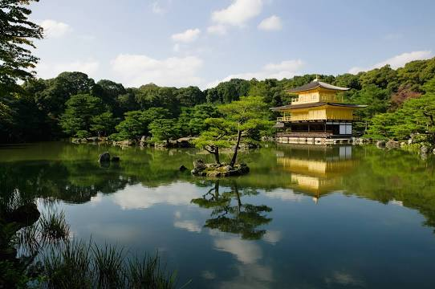

Kyoto (京都, Kyōto) served as Japan's capital and the emperor's residence from 794 until 1868. It is one of the country's ten largest cities with a population of 1.5 million people and a modern face.
Over the centuries, Kyoto was destroyed by many wars and fires, but due to its exceptional historic value, the city was dropped from the list of target cities for the atomic bomb and escaped destruction during World War II. Countless temples, shrines and other historically priceless structures survive in the city today.

Fushimi Inari Shrine (伏見稲荷大社, Fushimi Inari Taisha) is an important Shinto shrine in southern Kyoto. It is famous for its thousands of vermilion torii gates, which straddle a network of trails behind its main buildings. The trails lead into the wooded forest of the sacred Mount Inari, which stands at 233 meters and belongs to the shrine grounds.
Fushimi Inari is the most important of several thousands of shrines dedicated to Inari, the Shinto god of rice. Foxes are thought to be Inari's messengers, resulting in many fox statues across the shrine grounds. Fushimi Inari Shrine has ancient origins, predating the capital's move to Kyoto in 794.
.jfif)
Kinkakuji (金閣寺, Golden Pavilion) is a Zen temple in northern Kyoto whose top two floors are completely covered in gold leaf. Formally known as Rokuonji, the temple was the retirement villa of the shogun Ashikaga Yoshimitsu, and according to his will it became a Zen temple of the Rinzai sect after his death in 1408. Kinkakuji was the inspiration for the similarly named Ginkakuji (Silver Pavilion), built by Yoshimitsu's grandson, Ashikaga Yoshimasa, on the other side of the city a few decades later.
Kinkakuji is an impressive structure built overlooking a large pond, and is the only building left of Yoshimitsu's former retirement complex. It has burned down numerous times throughout its history including twice during the Onin War, a civil war that destroyed much of Kyoto; and once again more recently in 1950 when it was set on fire by a fanatic monk. The present structure was rebuilt in 1955.